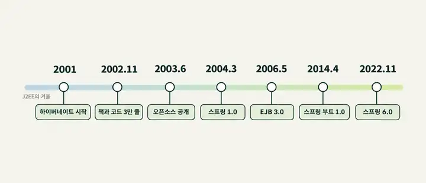
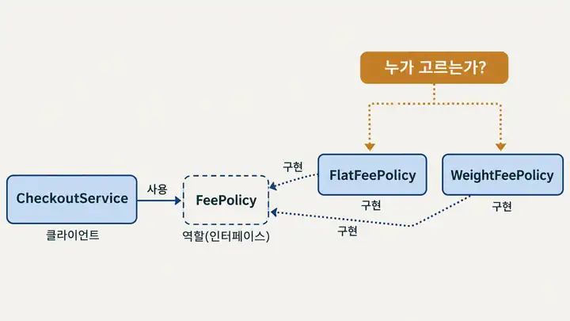
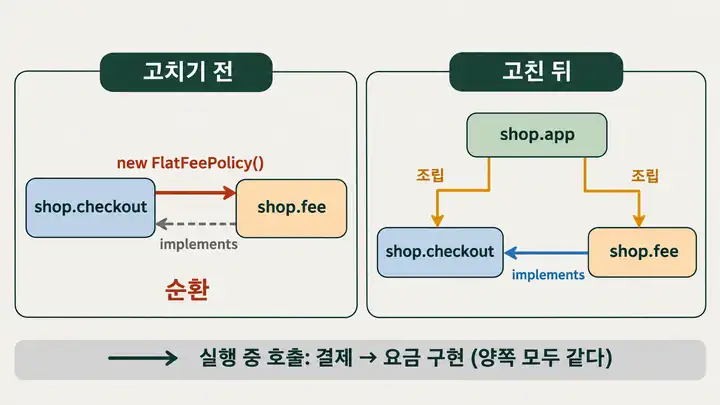
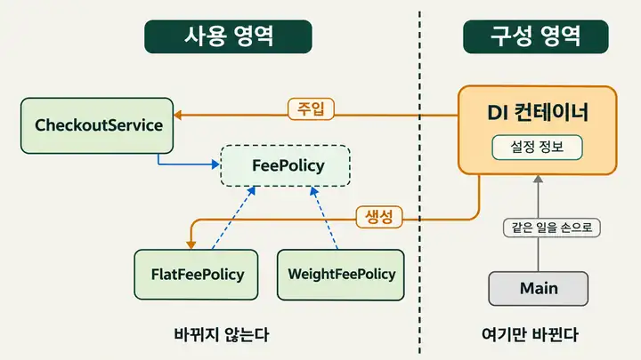

스프링 핵심 원리 기본편 / 01회
객체 지향 설계와 스프링
EJB의 겨울에서 스프링이 나온 사정을 1차 자료로 되짚고, 다형성만으로는 OCP와 DIP를 지킬 수 없는 이유를 의존 그래프·컴파일 오류·JIT 로그로 확인한 뒤 스프링이 맡는 자리를 짚는다.
오늘 끝나면 할 수 있는 것
- EJB 2.x 세션 빈이 요구한 인터페이스와 콜백을 근거로 "프레임워크가 업무 코드에 침투한다"는 말의 뜻을 설명하고, 스프링이 2003~2004년에 내놓은 대안의 방향을 말할 수 있다.
- "스프링"이라는 말이 가리키는 범위(스프링 프레임워크, 스프링 부트, 프로젝트 군)를 구분하고, 프레임워크의 중심이 코어 컨테이너라는 것을 레퍼런스 문서의 구성으로 설명할 수 있다.
jdeps출력에서 클래스와 패키지 사이의 의존 화살표를 읽어, 필드 타입만 인터페이스로 바꾼 코드가 여전히 구현에 의존한다는 것을 짚을 수 있다.- SOLID 다섯 원칙을 각각 한 문장으로 말하고, 컴파일러가 검사해 주는 부분과 사람이 지켜야 하는 부분을 예제(오버라이드 규칙의 컴파일 오류, 음수 배송비, 큰 인터페이스의 대역)로 구분할 수 있다.
- 다형성만으로는 OCP와 DIP를 만족할 수 없는 이유와, 그 빈자리를 객체를 생성하고 연결하는 별도의 존재(DI 컨테이너)가 채운다는 것을 구성 영역과 사용 영역의 구분으로 설명할 수 있다.
핵심 강의 → 핵심 요약 → 실무 재판단 → 적용 연습 → 이해 확인
01 핵심 강의
이 강의의 차례 · 소제목 14개
- 이 회차의 질문: 스프링은 무엇을 풀려고 만들어졌는가
- 자바 진영의 추운 겨울: EJB 2.x가 코드에 요구한 것
- 스프링의 탄생: 책에 딸린 3만 줄
- 스프링이란? 이름 하나가 가리키는 범위
- 좋은 객체 지향 프로그래밍이란? 역할, 구현, 협력
- 다형성만으로는 부족하다: jdeps로 본 의존 화살표
- SOLID 한눈에, 그리고 SRP: 변경의 이유로 묶는다
- OCP: 닫혀 있다는 것을 클래스 파일로 확인한다
- LSP: 컴파일러가 검사하는 것과 검사하지 못하는 것
- ISP: 작은 인터페이스가 싸다
- DIP: 화살표가 뒤집히는 자리
- 객체 지향 설계와 스프링: 조립을 맡는 존재
- 한 층 아래: 역할을 두는 비용은 어디에 있는가
- 흔한 오해 다섯 가지
이 회차의 질문: 스프링은 무엇을 풀려고 만들어졌는가
스프링 입문 권에서는 스프링 부트 프로젝트를 만들어 내장 톰캣 위에 회원 예제를 올렸고, @Controller, @Service, @Repository가 붙은 클래스가 빈으로 등록되어 생성자 주입으로 엮이는 것을 보았다. 그때는 쓰는 법을 따라가느라 한 가지 질문을 미뤄 두었다. 객체를 만들고 연결하는 일을 왜 프레임워크에 맡기는가. new 한 줄이면 되는 일에 컨테이너라는 큰 장치가 붙은 이유가 무엇인가.
이 권은 그 질문에서 다시 출발한다. 그리고 첫 회차인 이번에는 스프링 코드가 한 줄도 나오지 않는다. 스프링 컨테이너가 푸는 문제는 자바 언어만으로 정확히 기술할 수 있는 설계 문제이고, 문제의 모양을 먼저 보아야 답의 모양이 이해되기 때문이다. 순서는 이렇다. 스프링이 나오기 전 자바 서버 개발의 형편을 기록으로 확인하고, "스프링"이라는 이름이 가리키는 범위를 정리한다. 그다음 좋은 객체 지향 프로그래밍이 무엇인지, 다형성이 어디까지 해 주고 어디서 멈추는지를 코드로 확인한다. 그 멈춘 자리에 이름을 붙인 것이 SOLID의 다섯 원칙이고, 그 자리를 메우는 도구가 스프링이다.
역할과 구현의 분리, 컴파일 타임 의존성과 런타임 의존성, OCP는 자바 기본편 11회에서 상수 풀과 클래스 로딩 기록까지 내려가 확인했다. 스프링 입문 4회에서는 컨테이너가 하는 일을 짧은 코드로 흉내 내 보기도 했다. 이 회차는 같은 실험을 되풀이하지 않고 다른 도구를 쓴다. 클래스 파일 사이의 의존 화살표를 뽑아 주는 jdeps, 하위 타입이 지켜야 할 규칙을 어겼을 때 javac가 내는 오류, 인터페이스 호출을 JIT 컴파일러가 어떻게 처리했는지 보여 주는 HotSpot의 진단 로그다.
자바 진영의 추운 겨울: EJB 2.x가 코드에 요구한 것
2000년대 초에 자바로 기업용 서버 애플리케이션을 만든다는 것은 J2EE(Java 2 Platform, Enterprise Edition) 명세를 따른다는 뜻이었고, 그 중심에 엔터프라이즈 자바빈즈(Enterprise JavaBeans, EJB)가 있었다. EJB의 생각 자체는 지금 보아도 낯설지 않다. 트랜잭션, 원격 호출, 보안처럼 업무마다 반복되는 공통 처리를 애플리케이션 서버(컨테이너)가 맡고, 개발자는 업무 로직만 쓴다는 것이다. 문제는 그 대가로 업무 코드가 갖춰야 했던 형식이다.
그 형식은 지금도 API 문서에 남아 있다. Java EE 6 API 문서에서 javax.ejb 패키지의 세 인터페이스를 열어 보면, EJB 3.0 이전의 방식으로 원격 호출이 가능한 세션 빈 하나를 만들 때 무엇이 필요했는지가 적혀 있다.
| 만들어야 하는 것 | API 문서가 적어 둔 규칙 | 구현하는 쪽 |
|---|---|---|
| 원격 인터페이스(remote interface) | javax.ejb.EJBObject를 상속해야 한다. EJBObject는 java.rmi.Remote를 상속하고, 여기에 선언된 메서드는 모두 java.rmi.RemoteException을 던진다고 선언되어 있다. | 컨테이너 |
| 원격 홈 인터페이스(remote home interface) | javax.ejb.EJBHome을 상속해야 한다. 원격 클라이언트가 EJB 객체를 생성하고 찾고 삭제하는 메서드를 정의한다. | 컨테이너 |
| 빈 클래스(세션 빈) | javax.ejb.SessionBean을 구현한다. 컨테이너가 생명주기 이벤트를 알릴 때 호출하는 setSessionContext, ejbActivate, ejbPassivate, ejbRemove를 갖춘다. | 개발자 |
"주문 금액을 계산한다"는 업무 로직 하나를 위해 타입 세 개가 필요하고, 셋 모두 EJB나 RMI의 타입을 상속하거나 구현한다. 가상의 이름을 붙여 구조만 그려 보면 다음과 같다.
EJB 2.x 방식 (이름은 설명을 위해 지은 것) 평범한 자바 객체 방식
OrderService 원격 인터페이스 CheckoutService 그냥 클래스
└ extends javax.ejb.EJBObject └ 프레임워크 타입이 나오지 않는다
└ extends java.rmi.Remote
OrderServiceHome 원격 홈 인터페이스 누가 누구와 연결되는지는
└ extends javax.ejb.EJBHome 업무 코드 바깥에 적는다
└ extends java.rmi.Remote
OrderServiceBean 빈 클래스
└ implements javax.ejb.SessionBean
setSessionContext / ejbActivate
ejbPassivate / ejbRemove
이 구조에서 눈여겨볼 것은 타입의 개수보다 의존의 방향이다. 업무를 표현하는 인터페이스가 원격 호출 기술의 타입인 java.rmi.Remote를 조상으로 두고, 업무를 구현하는 클래스가 컨테이너의 콜백 인터페이스를 구현한다. 컴파일된 클래스 파일에는 javax/ejb/SessionBean 같은 이름이 박힌다. 프레임워크의 타입이 애플리케이션 코드 안으로 들어와 있는 이런 성질을 침투적(invasive)이라고 부른다.
침투의 결과는 두 가지로 나타난다. 첫째, 컨테이너 없이는 실행해 보기 어렵다. 위 표에서 원격 인터페이스와 홈 인터페이스를 구현하는 쪽은 컨테이너다. 이 빈을 호출하는 코드는 홈 인터페이스의 구현체를 이름 서비스에서 찾아와야 하는데, 그 구현체는 서버가 떠 있어야 존재한다. 업무 규칙 한 줄을 확인하려 해도 애플리케이션 서버에 배포하는 과정을 거쳐야 했다는 뜻이다. 둘째, 기술을 바꿀 수 없다. 업무 코드가 EJB 타입을 상속하고 있으므로, 다른 실행 환경으로 옮기려면 업무 코드 자체를 고쳐야 한다.
데이터베이스의 데이터를 객체로 다루는 수단인 엔티티 빈(entity bean) 쪽도 사정이 비슷했다. 하이버네이트의 공식 입문 문서는 프로젝트의 시작을 한 문장으로 적어 두었는데, 2001년 EJB 2의 엔티티 빈에 대한 개빈 킹(Gavin King)의 불만이 한계를 넘었을 때 시작되었다는 것이다. 표준 기술이 무겁다는 문제의식이 영속성 쪽에서는 하이버네이트로, 컨테이너 쪽에서는 곧 볼 스프링으로 이어졌다. 두 프로젝트의 방향은 같았다. 특정 프레임워크의 클래스를 상속하거나 인터페이스를 구현하도록 강제받지 않는 평범한 자바 객체, 흔히 POJO(Plain Old Java Object)라고 부르는 것으로 돌아가자는 것이다.
스프링의 탄생: 책에 딸린 3만 줄
스프링 프레임워크의 레퍼런스 문서는 자신의 출발을 짧게 적는다. 스프링은 2003년에, 초기 J2EE 명세의 복잡함에 대한 응답으로 생겨났다는 것이다. 그 앞뒤 사정은 로드 존슨(Rod Johnson)이 2006년 11월 스프링 블로그에 직접 쓴 글에 나온다. 그는 2002년 11월에 『Expert One-on-One J2EE Design and Development』라는 책을 냈고, 책에는 본문에서 설명한 설계를 구현한 프레임워크 코드 3만 줄이 딸려 있었다. 이 코드의 당시 이름은 Interface21 프레임워크였고 패키지 이름도 com.interface21이었다.
책의 독자였던 유겐 휠러(Juergen Hoeller)와 얀 카로프(Yann Caroff)가 이 코드를 오픈소스 프로젝트로 만들자고 그를 설득했고, 두 사람은 공동 창립자가 되었다. 프로젝트는 2003년 6월에 공개되었다. "스프링"이라는 이름은 얀 카로프가 제안했다. 로드 존슨의 글에 따르면 이 이름에는 전통적인 J2EE라는 "겨울"이 지난 뒤의 새로운 시작이라는 뜻이 담겨 있다. 자바 진영의 "추운 겨울"이라는 표현과 같은 비유다.
- 2001년하이버네이트 프로젝트 시작. EJB 2의 엔티티 빈에 대한 불만이 계기였다.
- 2002년 11월로드 존슨의 책 출간. 프레임워크 코드 3만 줄이 함께 공개되었다.
- 2003년 6월오픈소스 프로젝트로 공개. 유겐 휠러와 얀 카로프가 공동 창립자로 참여했다.
- 2004년 3월 24일스프링 프레임워크 1.0 final 릴리스.
- 2006년 5월 11일EJB 3.0(JSR 220) 최종 릴리스. 세션 빈이 EJB 인터페이스를 구현할 필요가 없어졌다.
- 2014년 4월 1일스프링 부트 1.0 GA.
- 2022년 11월 16일스프링 프레임워크 6.0 GA. Java 17 이상과
jakarta네임스페이스가 기준이 되었다.

2004년 3월 24일의 1.0 발표문은 범위를 열여섯 항목으로 적었다. 그중 몇 개를 옮기면 이렇다. 세터 주입과 생성자 주입을 지원하는 경량 컨테이너, 그 컨테이너와 통합된 AOP, 갈아 끼울 수 있는 전략(pluggable strategies)을 둔 범용 트랜잭션 관리, 자원과 오류 처리를 단순하게 해 주는 JDBC 추상화, 하이버네이트 지원, 전략 인터페이스 위에 세운 웹 MVC 프레임워크. 20년도 더 지난 지금 이 로드맵의 스프링 권들이 다루는 주제가 거의 그대로 들어 있다. 그리고 설명에 되풀이해 나오는 단어가 "전략"과 "갈아 끼운다"라는 점을 기억해 두자. 이 회차의 뒷부분 전체가 그 두 단어에 대한 이야기다.
같은 목록에는 EJB에 접근하고 EJB를 구현하는 것을 돕는 편의 클래스도 들어 있다. 스프링은 기존 기술을 버리라고 요구하지 않고 그것과 함께 쓸 수 있는 길을 열어 두었다. 지금의 레퍼런스 문서도 같은 태도를 유지한다. Java EE와 그 후신인 Jakarta EE가 스프링과 경쟁 관계로 여겨지기도 하지만 실제로는 보완 관계이고, 스프링은 플랫폼 명세 전체를 받아들이는 대신 서블릿 API, 빈 검증, JPA 같은 개별 명세를 골라 통합한다고 적는다.
표준도 뒤따라 움직였다. SessionBean의 API 문서에는 EJB 3.0부터는 세션 빈 클래스가 이 인터페이스를 구현할 필요가 없다는 문장이 붙어 있고, EJBHome의 문서에는 EJB 3.0 이후의 API로 작성한 빈에는 홈 인터페이스가 필요 없다는 문장이 붙어 있다. EJB 3.0을 정한 JSR 220의 소개문은 목표를 개발자 관점에서 본 EJB의 복잡함을 줄이는 것이라고 밝힌다. 영속성 쪽에서도 같은 일이 일어났다. 하이버네이트 문서는 하이버네이트가 자바 표준 영속성 API인 JPA에 영감을 주었다고 적는다. 오픈소스가 먼저 길을 내고 표준이 그 길을 따라간 셈이다.
이 역사에서 설계의 관점으로 가져갈 것은 하나다. 업무 코드가 기반 기술의 타입에 묶이면, 업무 코드는 테스트하기 어려워지고 기반 기술은 바꾸기 어려워진다. 이 문장은 뒤에서 의존관계 역전 원칙이라는 이름으로 다시 나온다.
스프링이란? 이름 하나가 가리키는 범위
"스프링을 쓴다"는 말은 문맥에 따라 다른 것을 가리킨다. 레퍼런스 문서의 개요가 이 점부터 짚는다. 스프링은 모든 것의 출발점인 스프링 프레임워크 프로젝트 자체를 뜻하기도 하고, 그 위에 만들어진 프로젝트들 전체를 뜻하기도 하며, 사람들이 스프링이라고 할 때는 대개 후자라는 것이다. 범위를 셋으로 나누어 보자.
스프링 프레임워크
스프링 프레임워크는 모듈로 나뉘어 있고 애플리케이션은 필요한 모듈만 골라 쓴다. 개요는 그 구조를 이렇게 설명한다. 중심에 코어 컨테이너의 모듈들이 있고, 여기에는 설정 모델과 의존성 주입 메커니즘이 들어 있다. 그 바깥에 메시징, 트랜잭션 데이터와 영속성, 웹 같은 애플리케이션 구조에 대한 기반 지원이 놓인다. 서블릿 기반의 스프링 MVC와, 그것과 나란히 있는 리액티브 방식의 스프링 WebFlux도 프레임워크의 일부다. 레퍼런스 문서의 차례가 이 구조를 그대로 따른다.
| 문서의 부 | 다루는 것 |
|---|---|
| Core | IoC 컨테이너, 이벤트, 리소스, 국제화, 검증, 데이터 바인딩, 타입 변환, SpEL, AOP, AOT |
| Testing | 목 객체, TestContext 프레임워크, Spring MVC Test, WebTestClient |
| Data Access | 트랜잭션, DAO 지원, JDBC, R2DBC, O/R 매핑, XML 마샬링 |
| Web Servlet | 스프링 MVC, WebSocket, SockJS, STOMP 메시징 |
| Web Reactive | 스프링 WebFlux, WebClient, WebSocket, RSocket |
| Integration | REST 클라이언트, JMS, JCA, JMX, 이메일, 태스크, 스케줄링, 캐시, 관측 가능성, JVM 체크포인트 복원 |
| Languages | 코틀린, 그루비, 동적 언어 |
표의 첫 줄 첫 항목이 IoC 컨테이너이고, 이 권 전체가 그 한 항목을 다룬다. 나머지 항목은 컨테이너가 만들고 관리하는 객체 위에서 동작한다. 스프링 입문 6회에서 AOP를 적용하자 컨테이너에 원래 객체 대신 프록시가 등록되던 것을 떠올리면 된다. 트랜잭션도, 웹 요청을 컨트롤러에 연결하는 일도 같은 토대 위에 서 있다. 그래서 스프링을 공부하는 순서는 대개 컨테이너에서 시작한다.
모듈은 물리적으로는 JAR 파일이다. 개요는 JAR의 이름이 spring-core, spring-context처럼 붙는다고 적는다. 스프링 입문 1회에서 스타터 하나가 끌고 오는 의존 그래프를 펼쳤을 때 보았던 이름들이다.
스프링 부트
스프링 부트는 스프링 프레임워크를 대신하는 것이 아니라 그 위에서 프레임워크를 쉽게 쓰게 해 주는 프로젝트다. 프로젝트 소개 페이지가 꼽는 기능은 여섯 가지다. 단독으로 실행되는 스프링 애플리케이션을 만든다. 톰캣 같은 서블릿 컨테이너를 내장해서 WAR 파일을 따로 배포할 필요가 없다. 빌드 설정을 단순하게 해 주는 스타터 의존성을 제공한다. 스프링과 서드파티 라이브러리를 가능한 한 자동으로 구성한다. 메트릭, 상태 확인, 외부화된 설정 같은 운영용 기능을 제공한다. 코드 생성이 없고 XML 설정을 요구하지 않는다.
레퍼런스 개요는 이 변화를 한 문단으로 정리한다. J2EE와 스프링의 초기에는 애플리케이션을 만들어 애플리케이션 서버에 배포했지만, 오늘날에는 스프링 부트의 도움으로 서블릿 컨테이너를 애플리케이션 안에 내장하는 방식으로 만든다는 것이다. 스프링 입문 1회에서 main 메서드가 톰캣 객체를 만들어 띄우는 것을 확인했는데, 그것이 이 문단의 실물이다. 스프링 부트 1.0은 2014년 4월 1일에 GA로 발표되었다.
스프링 생태계
스프링 프레임워크 위에는 여러 프로젝트가 올라가 있다. 공식 프로젝트 목록에서 자주 만나는 것만 꼽아도, 데이터 접근 방식을 일관되게 만들어 주는 스프링 데이터, 인증과 인가를 맡는 스프링 시큐리티, 대용량 배치 작업을 다루는 스프링 배치, 분산 시스템의 공통 패턴을 위한 도구를 모은 스프링 클라우드, 사용자 세션 정보를 관리하는 스프링 세션, 문서화를 돕는 스프링 REST Docs가 있다. 레퍼런스 개요는 각 프로젝트가 자기 소스 저장소와 이슈 트래커, 릴리스 주기를 따로 가진다는 점을 기억하라고 덧붙인다. "스프링 버전"이라는 말이 프로젝트마다 다른 숫자를 가리키는 이유다.
버전과 이 강좌의 기준
스프링 프레임워크의 세대별 기준은 프로젝트 위키의 버전 표에 정리되어 있다.
| 스프링 프레임워크 | JDK 범위 | Java/Jakarta EE 기준 |
|---|---|---|
| 7.x | JDK 17~25+ | Jakarta EE 11~12 (jakarta 네임스페이스) |
| 6.2 | JDK 17~25 | Jakarta EE 9~10 (jakarta 네임스페이스) |
| 5.3 | JDK 8~21 | Java EE 7~8 (javax 네임스페이스) |
가장 큰 경계는 5와 6 사이에 있다. 6.0부터 Java 17 이상이 필요하고, 서블릿이나 JPA 같은 EE API의 패키지 이름이 javax에서 jakarta로 바뀌었다. 이 강좌는 스프링 프레임워크 6.x와 스프링 부트 3.x를 기준으로 쓴다. 다만 이 권이 다루는 컨테이너의 원리는 특정 세대에 묶인 내용이 아니다. 레퍼런스 개요가 설계 철학의 하나로 강한 하위 호환성 유지를 꼽고 있고, 1.0 발표문의 첫 항목이던 세터 주입과 생성자 주입이 지금도 같은 이름으로 쓰인다.
그래서 무엇이 핵심인가
기능 목록은 길지만 구조는 단순하다. 레퍼런스 개요의 표현으로는 코어 컨테이너가 프레임워크의 심장부에 있다("At the heart are the modules of the core container"). 그 컨테이너가 하는 일은 객체를 만들고 객체 사이의 의존관계를 연결하는 것이다. 웹, 데이터 접근, 트랜잭션은 그 위에 얹힌 응용이다.
그렇다면 객체를 만들고 연결하는 일이 왜 프레임워크의 심장부가 될 만큼 중요한가. 답은 자바가 객체 지향 언어라는 데 있다. 객체 지향 설계를 끝까지 밀고 가면 "객체를 누가 만들고 누가 연결하는가"라는 질문에 반드시 부딪히고, 그 질문에 답하는 장치가 없으면 설계 원칙을 지킬 수 없게 된다. 이 주장을 남은 지면에서 코드로 확인한다.
좋은 객체 지향 프로그래밍이란? 역할, 구현, 협력
객체 지향의 특징으로 흔히 추상화, 캡슐화, 상속, 다형성을 꼽는다. 설계에서 가장 큰 차이를 만드는 것은 다형성이다. 객체 지향 프로그래밍은 프로그램을 명령어의 목록으로 보지 않고, 메시지를 주고받으며 협력하는 객체들의 모임으로 본다. 메시지를 보내 요청하는 객체를 클라이언트(client), 요청을 받아 응답하는 객체를 서버(server)라고 부른다. 여기서 클라이언트와 서버는 네트워크의 기계가 아니라 호출 한 번에서 맡는 자리의 이름이고, 한 객체가 어떤 호출에서는 서버이면서 다른 호출에서는 클라이언트가 된다.
좋은 객체 지향 프로그램은 변경하기 쉬운 프로그램이다. 부품을 갈아 끼우듯 객체의 구현을 바꿀 수 있어야 한다. 그러려면 객체를 두 층으로 나누어 본다. 무엇을 해 주는지를 정한 역할(role)과, 그것을 실제로 해내는 구현(implementation)이다. 자바에서는 역할을 인터페이스로, 구현을 그 인터페이스를 구현한 클래스로 표현한다.
역할과 구현을 나누면 클라이언트는 네 가지를 얻는다. 역할, 곧 인터페이스만 알면 된다. 구현의 내부 구조를 몰라도 된다. 구현의 내부 구조가 바뀌어도 영향을 받지 않는다. 구현 대상 자체가 다른 것으로 바뀌어도 영향을 받지 않는다. 뒤의 둘이 "변경하기 쉽다"는 말의 실체다.
이 회차 전체에서 쓸 예제를 정한다. 온라인 상점의 결제 금액은 상품 가격에 배송비를 더한 값이다. 배송비를 정하는 방식은 바뀔 수 있다. 지금은 무게와 상관없이 3,000원이지만, 무게에 비례하는 요금제로 바꾸자는 이야기가 나오고 있다. 배송비를 정하는 일을 역할로 세우고 두 가지 구현을 만든다.
package shop.checkout;
public interface FeePolicy {
int fee(int weightGram);
}package shop.fee;
import shop.checkout.FeePolicy;
public class FlatFeePolicy implements FeePolicy {
@Override
public int fee(int weightGram) {
return 3000;
}
}package shop.fee;
import shop.checkout.FeePolicy;
public class WeightFeePolicy implements FeePolicy {
@Override
public int fee(int weightGram) {
int kg = (weightGram + 999) / 1000;
return 2500 + 500 * kg;
}
}WeightFeePolicy는 무게를 1kg 단위로 올림한 뒤 기본 2,500원에 kg당 500원을 더한다. 1,200g이면 (1200 + 999) / 1000이 정수 나눗셈으로 2가 되어 3,500원이다. 패키지를 나눈 데는 이유가 있다. 인터페이스 FeePolicy는 그것을 사용하는 쪽인 shop.checkout에 두었고, 구현 두 개는 shop.fee에 두었다. 이 배치가 뒤에서 의존의 방향을 읽을 때 쓰인다.
다형성의 본질은 인터페이스를 구현한 객체를 실행 시점에 유연하게 바꿀 수 있다는 것이다. 클라이언트가 feePolicy.fee(weightGram)이라고 쓰면 컴파일러는 이것을 invokeinterface 명령 하나로 옮기고, 실제로 실행될 메서드는 그 순간 참조가 가리키는 객체의 클래스에서 찾는다(자바 기본편 10회). 그래서 클라이언트의 코드를 건드리지 않고 서버 쪽의 구현을 바꿀 수 있다. 협력이라는 관점에서 말하면, 다형성은 클라이언트를 변경하지 않고 서버의 기능을 변경할 수 있게 해 주는 장치다.
한계도 분명하다. 역할 자체가 바뀌면 클라이언트와 서버 양쪽에 큰 변경이 생긴다. fee(int weightGram)이 지역까지 받는 fee(int weightGram, String region)으로 바뀌면 모든 구현 클래스와 모든 호출 지점을 고쳐야 한다. 역할은 클라이언트와 모든 구현이 함께 기대고 있는 지점이기 때문이다. 그래서 인터페이스는 구현보다 훨씬 신중하게, 잘 바뀌지 않도록 설계해야 한다.

다형성만으로는 부족하다: jdeps로 본 의존 화살표
이제 클라이언트를 쓴다. 역할 타입의 필드를 두고 구현을 하나 골라 넣는, 가장 자연스럽게 떠오르는 코드다.
package shop.checkout;
import shop.fee.FlatFeePolicy;
public class CheckoutService {
private final FeePolicy feePolicy = new FlatFeePolicy();
public int total(int itemPrice, int weightGram) {
return itemPrice + feePolicy.fee(weightGram);
}
}package shop.app;
import shop.checkout.CheckoutService;
public class Main {
public static void main(String[] args) {
CheckoutService checkout = new CheckoutService();
System.out.println(checkout.total(20000, 1200));
}
}23000필드의 타입이 FeePolicy이므로 역할에 의존하는 코드처럼 읽힌다. 정말 그런지 도구로 확인한다. JDK에 들어 있는 jdeps는 자바 클래스 의존성 분석기다. 컴파일된 클래스 파일을 읽어 어떤 클래스가 어떤 클래스를 참조하는지 출력한다. 소스가 아닌 클래스 파일을 읽는다는 점이 중요하다. 주석이나 변수 이름이 아니라 JVM이 실제로 보게 될 참조 관계를 보여 주기 때문이다.
javac -d out $(find shop -name "*.java")
jdeps -verbose:class -filter:none -e 'shop\..*' outout -> out
shop.app.Main -> shop.checkout.CheckoutService out
shop.checkout.CheckoutService -> shop.checkout.FeePolicy out
shop.checkout.CheckoutService -> shop.fee.FlatFeePolicy out
shop.fee.FlatFeePolicy -> shop.checkout.FeePolicy out
shop.fee.WeightFeePolicy -> shop.checkout.FeePolicy out옵션의 뜻은 이렇다. -verbose:class는 의존을 클래스 단위로 출력한다. jdeps는 기본적으로 같은 패키지 안의 의존을 걸러 내므로 -filter:none으로 걸러 내지 않게 했다. -e는 정규식에 맞는 의존만 남기는데, 여기서는 java.lang.Object 같은 JDK 클래스를 빼고 shop 아래의 것만 보려고 썼다.
셋째 줄이 문제다. CheckoutService는 FeePolicy에도 의존하고 FlatFeePolicy에도 의존한다. 원인은 필드 초기화식의 new FlatFeePolicy()다. 이 식은 생성자 안에서 new 명령과 생성자를 호출하는 invokespecial 명령으로 컴파일되고, 두 명령 모두 shop/fee/FlatFeePolicy라는 이름을 가리킨다. 필드의 타입을 인터페이스로 선언한 것은 호출하는 쪽의 묶임만 풀었을 뿐이고, 생성하는 쪽의 묶임은 그대로 남았다.
패키지 단위로 보면 구조의 결함이 더 잘 드러난다.
jdeps -verbose:package -e 'shop\..*' outout -> out
shop.app -> shop.checkout out
shop.checkout -> shop.fee out
shop.fee -> shop.checkout out클래스 사이의 의존
Main ──▶ CheckoutService ──────▶ FeePolicy ◀────── FlatFeePolicy
│ ◀────── WeightFeePolicy
└──────────────▶ FlatFeePolicy (new 때문에 생긴 화살표)
패키지 사이의 의존
shop.app ──▶ shop.checkout ◀──▶ shop.fee (양방향, 순환)
shop.checkout과 shop.fee가 서로를 가리킨다. 결제 패키지는 요금 구현을 생성하느라 요금 패키지에 의존하고, 요금 패키지는 인터페이스를 구현하느라 결제 패키지에 의존한다. 어느 한쪽만 먼저 컴파일할 수 없고, 한쪽만 떼어 다른 프로그램에 가져다 쓸 수도 없다.
이 상태에서 배송비 정책을 무게 비례로 바꾸려면 무엇을 고쳐야 하는가. WeightFeePolicy는 이미 만들어져 있다. 그런데도 CheckoutService.java를 열어 new FlatFeePolicy()를 new WeightFeePolicy()로 고치고 import도 고친 뒤 다시 컴파일해야 한다. 결제 금액을 계산하는 논리는 한 글자도 바뀌지 않았는데 결제 클래스를 수정하고 다시 테스트하고 다시 배포한다. 요금제가 열 개가 되어도, 결제 서비스 말고 배송비를 쓰는 클래스가 다섯 개 더 생겨도 같은 일이 반복된다.
다형성은 구현을 갈아 끼울 수 있는 구조를 주었다. 그러나 누가 갈아 끼우는지는 정해 주지 않았다. 클라이언트가 직접 구현을 골라 생성하는 한, 클라이언트는 구현의 이름을 알고 있고 구현이 바뀔 때마다 함께 바뀐다. 이 문제에 이름을 붙이고 벗어날 조건을 정리한 것이 SOLID다.
SOLID 한눈에, 그리고 SRP: 변경의 이유로 묶는다
SOLID는 로버트 C. 마틴(Robert C. Martin)이 정리한 객체 지향 설계 원칙 다섯 개의 머리글자다. 그는 2020년의 글 「Solid Relevance」에서 다섯 원칙을 각각 한두 문장으로 요약했다. 우리말로 옮기면 다음과 같다.
| 원칙 | 이름 | 마틴의 요약(옮긴 것) |
|---|---|---|
| SRP | 단일 책임 원칙(Single Responsibility Principle) | 같은 이유로 바뀌는 것들을 한데 모으고, 다른 이유로 바뀌는 것들을 떼어 놓는다. |
| OCP | 개방-폐쇄 원칙(Open-Closed Principle) | 모듈은 확장에는 열려 있고 수정에는 닫혀 있어야 한다. |
| LSP | 리스코프 치환 원칙(Liskov Substitution Principle) | 인터페이스를 사용하는 프로그램이 그 인터페이스의 구현 때문에 혼란에 빠져서는 안 된다. |
| ISP | 인터페이스 분리 원칙(Interface Segregation Principle) | 인터페이스를 작게 유지해서, 사용자가 필요하지 않은 것에 의존하게 되지 않도록 한다. |
| DIP | 의존관계 역전 원칙(Dependency Inversion Principle) | 추상화가 있는 방향으로 의존한다. 상위 수준의 모듈이 하위 수준의 세부에 의존해서는 안 된다. |
다섯 원칙을 차례로 보되, 각각에 대해 두 가지를 묻는다. 이 원칙을 어기면 구체적으로 무엇이 깨지는가. 그리고 자바 컴파일러나 도구가 그것을 잡아 주는가, 아니면 사람이 지켜야 하는가.
SRP가 말하는 "책임"
SRP는 흔히 "한 클래스는 하나의 책임만 가져야 한다"로 전해지는데, 이 문장만으로는 쓸 수가 없다. 책임이 하나인지 둘인지를 가를 기준이 없기 때문이다. 마틴은 2014년의 글에서 기준을 변경으로 옮겨 놓았다. 모듈이 바뀌어야 하는 이유가 하나뿐이어야 한다는 것이고, 그 이유의 뿌리는 변경을 요구하는 사람들이라는 것이다. 그가 든 예는 직원을 나타내는 클래스 하나에 급여 계산, 데이터베이스 저장, 근무 시간 보고가 함께 들어 있는 경우다. 세 기능은 회사 안의 서로 다른 조직이 요구하므로, 한 조직의 요청으로 고친 코드가 다른 조직이 기대던 동작을 깨뜨릴 수 있다.
같은 문제를 결제 예제로 만들어 본다.
import java.io.FileWriter;
import java.io.IOException;
import java.io.UncheckedIOException;
public class CheckoutService {
public String checkout(String item, int itemPrice, int weightGram) {
int fee = weightGram <= 2000 ? 3000 : 5000;
int total = itemPrice + fee;
String receipt = item + " " + total + "원 (배송비 " + fee + "원 포함)";
try (FileWriter writer = new FileWriter("orders.log", true)) {
writer.write(receipt + System.lineSeparator());
} catch (IOException e) {
throw new UncheckedIOException(e);
}
return receipt;
}
}checkout("머그컵", 20000, 1200)을 호출하면 머그컵 23000원 (배송비 3000원 포함)이 반환되고 같은 줄이 orders.log에 덧붙는다. 스무 줄이 안 되는 메서드지만 바뀌는 이유가 셋이다.
| 들어올 수 있는 변경 요청 | 요청하는 쪽 | 고쳐야 하는 곳 |
|---|---|---|
| 2kg 초과 배송비를 5,000원에서 6,000원으로 | 물류 담당 | fee를 정하는 식 |
| 영수증 문구에 주문 일시 추가 | 고객 응대 담당 | receipt를 만드는 식 |
| 주문 기록을 파일에서 데이터베이스로 | 운영 담당 | FileWriter를 쓰는 블록 |
세 요청이 모두 같은 메서드를 연다. 배송비 요금표를 고치던 사람이 영수증 문자열을 건드릴 수 있고, 두 사람이 동시에 작업하면 같은 파일에서 충돌한다. 테스트도 어렵다. 배송비 계산이 맞는지만 확인하고 싶어도 이 메서드를 부르면 디스크에 파일이 생긴다. 변경의 이유가 섞여 있으면 변경의 파급도 섞인다.
이유별로 떼어 내면 다음과 같이 된다.
public interface ReceiptFormatter {
String format(String item, int total, int fee);
}public interface OrderLog {
void append(String line);
}public class CheckoutService {
private final FeePolicy feePolicy;
private final ReceiptFormatter formatter;
private final OrderLog orderLog;
public CheckoutService(FeePolicy feePolicy, ReceiptFormatter formatter, OrderLog orderLog) {
this.feePolicy = feePolicy;
this.formatter = formatter;
this.orderLog = orderLog;
}
public String checkout(String item, int itemPrice, int weightGram) {
int fee = feePolicy.fee(weightGram);
int total = itemPrice + fee;
String receipt = formatter.format(item, total, fee);
orderLog.append(receipt);
return receipt;
}
}이제 CheckoutService가 바뀌는 이유는 결제의 흐름, 곧 무엇을 어떤 순서로 하는지가 달라질 때 하나뿐이다. 배송비 요금표가 바뀌면 FeePolicy의 구현만, 문구가 바뀌면 ReceiptFormatter의 구현만, 기록 방식이 바뀌면 OrderLog의 구현만 열면 된다. SRP를 잘 지켰는지 판단하는 실용적인 기준이 여기서 나온다. 변경이 하나 생겼을 때 고쳐야 하는 곳이 한 군데로 모이는가, 그 수정이 다른 기능으로 번지지 않는가.
이 원칙은 컴파일러가 잡아 주지 않는다. 앞의 스무 줄짜리 메서드는 문제없이 컴파일되고 실행된다. 책임의 크기도 정해진 답이 없다. 너무 크게 잡으면 위와 같은 문제가 생기고, 너무 잘게 쪼개면 흐름 하나를 따라가는 데 파일 열 개를 열어야 한다. 스프링 입문 3회에서 회원 예제를 컨트롤러, 서비스, 리포지토리로 나눈 것이 변경의 이유(HTTP 형식, 업무 규칙, 저장 기술)를 기준으로 한 분리의 흔한 예다.
OCP: 닫혀 있다는 것을 클래스 파일로 확인한다
개방-폐쇄 원칙은 소프트웨어 요소가 확장에는 열려 있고 변경에는 닫혀 있어야 한다는 원칙이다. 처음 들으면 모순처럼 들린다. 기능을 늘리려면 코드를 고쳐야 하지 않는가. 다형성이 그 모순을 푼다. 인터페이스를 구현한 새 클래스를 하나 더 만드는 것은 기능의 확장이지만 기존 코드의 수정이 아니다. WeightFeePolicy를 추가하면서 FlatFeePolicy도 FeePolicy도 건드리지 않았다.
그런데 앞 절에서 확인했듯이 그 새 구현을 실제로 쓰려면 CheckoutService를 고쳐야 했다. 다형성을 썼는데도 OCP를 지키지 못한 것이다. 구현 객체를 바꾸려면 클라이언트의 코드를 바꿔야 하는 구조이기 때문이다. 벗어나는 길은 하나다. 클라이언트가 구현을 만들지 않고 받게 한다.
package shop.checkout;
public class CheckoutService {
private final FeePolicy feePolicy;
public CheckoutService(FeePolicy feePolicy) {
this.feePolicy = feePolicy;
}
public int total(int itemPrice, int weightGram) {
return itemPrice + feePolicy.fee(weightGram);
}
}package shop.app;
import shop.checkout.CheckoutService;
import shop.checkout.FeePolicy;
import shop.fee.FlatFeePolicy;
public class Main {
public static void main(String[] args) {
FeePolicy feePolicy = new FlatFeePolicy();
CheckoutService checkout = new CheckoutService(feePolicy);
System.out.println(checkout.total(20000, 1200));
}
}실행 결과는 같은 23000이다. import shop.fee.FlatFeePolicy가 CheckoutService에서 사라지고 Main으로 옮겨 갔다. 같은 jdeps 명령을 다시 돌린다.
out -> out
shop.app.Main -> shop.checkout.CheckoutService out
shop.app.Main -> shop.checkout.FeePolicy out
shop.app.Main -> shop.fee.FlatFeePolicy out
shop.checkout.CheckoutService -> shop.checkout.FeePolicy out
shop.fee.FlatFeePolicy -> shop.checkout.FeePolicy out
shop.fee.WeightFeePolicy -> shop.checkout.FeePolicy outCheckoutService에서 나가는 화살표가 FeePolicy 하나로 줄었다. 구현 클래스의 이름을 아는 것은 Main뿐이다. 이제 OCP가 지켜지는지를 실험으로 확인한다. Main의 FlatFeePolicy를 WeightFeePolicy로 바꾸고, 전체 소스를 다른 디렉터리 out2에 새로 컴파일한 다음 두 결과물의 SHA-256 해시를 비교한다.
$ java -cp out2 shop.app.Main
23500
$ shasum -a 256 out/shop/checkout/CheckoutService.class out2/shop/checkout/CheckoutService.class
7bbb7999c9793e7b… out/shop/checkout/CheckoutService.class
7bbb7999c9793e7b… out2/shop/checkout/CheckoutService.class
$ shasum -a 256 out/shop/app/Main.class out2/shop/app/Main.class
8792003561ebd8b9… out/shop/app/Main.class
8430f9c4b889a91c… out2/shop/app/Main.class결제 금액은 23,000원에서 23,500원으로 달라졌다. 프로그램의 동작이 바뀐 것이다. 그런데 CheckoutService.class는 한 바이트도 달라지지 않았다. 해시 값 자체는 소스의 줄 배치와 컴파일러 버전에 따라 달라지므로 숫자는 중요하지 않고, 두 값이 같다는 것만 보면 된다. "수정에 닫혀 있다"는 말을 가장 엄격하게 확인하는 방법이 이것이다. 이미 테스트를 마치고 배포한 클래스 파일을 그대로 둔 채 기능이 확장되었다.
물론 수정이 사라진 것은 아니다. Main.class의 해시는 달라졌다. 수정할 곳이 Main으로 옮겨 갔을 뿐이다. 자바 기본편 11회에서 프로그램을 두 영역으로 나누어 불렀다. 역할에만 의존하며 일을 하는 사용 영역과, 구현을 골라 만들고 연결하는 구성 영역이다. OCP가 닫아 주는 것은 사용 영역이다. 구성 영역은 원래 바뀌라고 있는 곳이다. 여기서 한 가지 결론이 나온다. OCP를 지키려면 객체를 생성하고 연관관계를 맺어 주는 일을 맡을 별도의 조립자가 반드시 필요하다. 지금은 Main이 그 일을 하고 있다.
LSP: 컴파일러가 검사하는 것과 검사하지 못하는 것
리스코프 치환 원칙은 프로그램의 객체를 그 하위 타입(subtype)의 인스턴스로 바꾸어도 프로그램의 정확성이 깨지지 않아야 한다는 원칙이다. 이름은 컴퓨터 과학자 바버라 리스코프(Barbara Liskov)에게서 왔다. 마틴은 「Solid Relevance」에서 이 원칙이 오랫동안 상속에 관한 것으로 오해되어 왔다고 적고, 상속이 아니라 하위 타입 관계에 관한 것이라고 바로잡는다. 인터페이스의 구현은 모두 그 인터페이스의 하위 타입이고, 인터페이스를 쓰는 모든 쪽이 그 의미에 동의하고 있어야 한다는 것이다.
앞 절에서 구현을 갈아 끼워도 CheckoutService가 그대로일 수 있었던 것은 FlatFeePolicy와 WeightFeePolicy가 둘 다 "무게를 받아 배송비를 돌려준다"는 약속을 지켰기 때문이다. 갈아 끼울 수 있다는 다형성의 이득은 모든 구현이 역할의 약속을 지킨다는 전제 위에 서 있다. 그 약속의 일부는 컴파일러가 검사하고 나머지는 검사하지 못한다. 경계가 어디인지 확인하자. 이 절부터는 설명을 짧게 하려고 예제의 패키지 선언을 뺐고, 인터페이스에는 약속을 주석으로 적어 두었다.
public interface FeePolicy {
/** 무게(g)에 대한 배송비(원)를 돌려준다. 결과는 0 이상이다. */
int fee(int weightGram);
}컴파일러가 막아 주는 부분
자바 언어 명세 8.4.8.3절은 메서드를 오버라이드하거나 인터페이스의 메서드를 구현할 때의 요구 사항을 정한다. 그중 셋이 이 논의에 닿는다. 반환 타입은 원래 메서드의 반환 타입을 대체할 수 있어야 한다. 원래 메서드보다 더 많은 체크 예외를 던진다고 선언할 수 없다. 접근 제어자는 원래 메서드 이상의 접근을 허용해야 한다. 각각을 어기는 구현을 하나씩 만들어 컴파일해 본다.
public class HiddenFeePolicy implements FeePolicy {
int fee(int weightGram) {
return 0;
}
}import java.io.IOException;
public class RemoteFeePolicy implements FeePolicy {
public int fee(int weightGram) throws IOException {
return 0;
}
}public class PreciseFeePolicy implements FeePolicy {
public long fee(int weightGram) {
return 0L;
}
}HiddenFeePolicy.java:2: error: fee(int) in HiddenFeePolicy cannot implement fee(int) in FeePolicy
int fee(int weightGram) {
^
attempting to assign weaker access privileges; was public
RemoteFeePolicy.java:4: error: fee(int) in RemoteFeePolicy cannot implement fee(int) in FeePolicy
public int fee(int weightGram) throws IOException {
^
overridden method does not throw IOException
PreciseFeePolicy.java:1: error: PreciseFeePolicy is not abstract and does not override abstract method fee(int) in FeePolicy
public class PreciseFeePolicy implements FeePolicy {
^
PreciseFeePolicy.java:2: error: fee(int) in PreciseFeePolicy cannot implement fee(int) in FeePolicy
public long fee(int weightGram) {
^
return type long is not compatible with int세 규칙이 왜 있는지는 클라이언트의 처지에서 보면 분명하다. 컴파일러가 itemPrice + feePolicy.fee(weightGram)을 번역할 때 아는 것은 FeePolicy의 선언뿐이다. 메서드가 public이니 호출할 수 있고, 체크 예외를 선언하지 않았으니 try로 감쌀 필요가 없고, int가 돌아오니 곧바로 정수 덧셈을 할 수 있다고 보고 바이트코드를 만든다. 구현이 이 가정 가운데 하나라도 깨면 이미 컴파일된 클라이언트가 틀린 코드가 된다. 그래서 언어가 그런 구현을 금지한다. 타입 수준에서 하위 타입으로 치환해도 된다는 것까지는 컴파일러가 보장해 준다.
컴파일러가 막지 못하는 부분
public class PromoFeePolicy implements FeePolicy {
@Override
public int fee(int weightGram) {
return -1; // 행사 기간에는 무료라는 뜻으로 -1을 돌려준다
}
}public class LspMain {
public static void main(String[] args) {
CheckoutService checkout = new CheckoutService(new PromoFeePolicy());
System.out.println(checkout.total(20000, 1200));
// ...
}
}19999시그니처에는 흠이 없으므로 컴파일된다. 실행 중에 예외도 나지 않는다. 그런데 2만 원짜리 상품의 결제 금액이 19,999원이 되었다. PromoFeePolicy를 만든 사람은 -1을 "무료"라는 표시로 썼지만, CheckoutService는 인터페이스에 적힌 "결과는 0 이상이다"를 믿고 그 값을 그대로 더했다. 약속은 주석에 있고 컴파일러는 주석을 읽지 않는다.
이 구현을 살리려고 클라이언트에 if (fee < 0) fee = 0;을 넣는 것은 해법이 아니다. 클라이언트가 특정 구현의 사정을 알게 되고, 다음에 누군가 -2를 다른 뜻으로 쓰는 구현을 만들면 분기가 또 늘어난다. 고쳐야 하는 쪽은 약속을 어긴 구현이다. 무료라면 0을 돌려주면 된다. 구현이 약속을 깨는 방식은 대체로 세 갈래다. 결과에 대한 약속을 약하게 만든다(0 이상이어야 하는데 음수를 돌려준다). 입력에 대한 요구를 강하게 만든다(모든 무게에 답하기로 했는데 30kg이 넘으면 예외를 던진다). 약속에 없던 부수 효과를 일으킨다(호출될 때마다 외부 시스템에 기록을 남겨서, 같은 값을 두 번 물어본 클라이언트를 곤란하게 한다).
JDK 안에도 생각해 볼 예가 있다.
List<Integer> numbers = List.of(1, 2);
try {
numbers.add(3);
} catch (UnsupportedOperationException e) {
System.out.println("add 거부: " + e);
}add 거부: java.lang.UnsupportedOperationExceptionList.of가 돌려주는 리스트는 List를 구현하지만 add를 받아들이지 않는다. 이것이 약속 위반인지는 약속을 읽어 봐야 안다. Collection.add의 Javadoc은 이 메서드를 선택적 연산(optional operation)이라고 적어 두었다. 인터페이스가 스스로 "지원하지 않는 구현이 있을 수 있다"고 말하고 있으므로 불변 리스트는 약속을 어기지 않았다. 대신 치르는 값이 있다. List를 인자로 받는 메서드는 그 리스트에 add가 된다고 가정할 수 없다. 역할이 보장하는 것이 적으면 클라이언트가 기댈 수 있는 것도 적다. 인터페이스를 설계할 때 메서드의 이름과 타입에 더해 무엇을 보장하는지를 문서로 남겨야 하는 이유다.
LSP는 뒤에서 스프링 컨테이너를 쓸 때도 전제로 깔린다. 컨테이너는 설정에 따라 구현을 바꿔 끼워 주지만, 끼워 넣은 구현이 역할의 약속을 지키는지는 검사하지 않는다. 테스트에서 쓰는 가짜 구현도 예외가 아니다. 가짜가 진짜와 다른 약속으로 동작하면 테스트는 통과하고 운영에서 깨진다.
ISP: 작은 인터페이스가 싸다
인터페이스 분리 원칙은 특정 클라이언트를 위한 인터페이스 여러 개가 범용 인터페이스 하나보다 낫다는 원칙이다. 상점이 택배사와 주고받는 일을 생각해 보자. 배송비를 묻고, 송장을 출력하고, 배송 상태를 조회하고, 수거를 요청한다. 모두 택배사와 하는 일이니 인터페이스 하나에 모으고 싶어진다.
public interface CourierOperations {
int fee(int weightGram);
void printLabel(String address);
String trackingStatus(String invoiceNo);
void requestPickup(String address);
}public class CheckoutService {
private final CourierOperations courier;
public CheckoutService(CourierOperations courier) {
this.courier = courier;
}
public int total(int itemPrice, int weightGram) {
return itemPrice + courier.fee(weightGram);
}
}결제 서비스는 네 메서드 가운데 fee 하나만 쓴다. 이 구조에서 세 가지를 관찰할 수 있다. 첫째, javap -v로 CheckoutService의 상수 풀을 보면 인터페이스 메서드 참조는 CourierOperations.fee:(I)I 하나뿐이다. 실행에 필요한 것은 처음부터 fee 하나였다. 둘째, 그런데도 결제 서비스를 테스트하려고 가짜 택배사를 만들면 네 메서드를 모두 채워야 한다.
public class FakeCourier implements CourierOperations {
@Override
public int fee(int weightGram) {
return 0;
}
@Override
public void printLabel(String address) {
throw new UnsupportedOperationException();
}
@Override
public String trackingStatus(String invoiceNo) {
throw new UnsupportedOperationException();
}
@Override
public void requestPickup(String address) {
throw new UnsupportedOperationException();
}
}셋째, 누군가 수거 취소 기능이 필요해져서 인터페이스에 void cancelPickup(String address);를 추가하면 결제와 아무 관계가 없는 이 가짜가 컴파일되지 않는다.
FakeCourier.java:1: error: FakeCourier is not abstract and does not override abstract method cancelPickup(String) in CourierOperations
public class FakeCourier implements CourierOperations {
^
1 error여기에는 층이 두 개 있다. 인터페이스만 다시 컴파일하고 예전의 CheckoutService.class와 FakeCourier.class를 그대로 둔 채 실행하면 프로그램은 전과 같이 동작한다. 아무도 cancelPickup을 호출하지 않으므로 JVM은 그 메서드를 찾을 일이 없다. 클래스 파일 수준에서 결제 서비스는 영향을 받지 않는다. 그러나 소스와 빌드의 수준에서는 영향을 받는다. 전체를 다시 빌드하는 순간 결제 테스트용 가짜를 고쳐야 하고, 결제 모듈을 다시 검증하고 배포해야 한다. 마틴은 「Solid Relevance」에서 이 문제가 자바 같은 정적 타입 언어에서 특히 심하다고 적는다. 호출하지 않는 메서드라도 그것이 바뀔 때 다시 컴파일하고 배포해야 한다면 사실상 그 메서드에 의존하고 있는 것이라는 지적이다.
인터페이스를 클라이언트가 쓰는 묶음대로 나눈다.
// 파일마다 하나씩 둔다
public interface FeePolicy {
int fee(int weightGram);
}
public interface LabelPrinter {
void printLabel(String address);
}
public interface ParcelTracker {
String trackingStatus(String invoiceNo);
}
public interface PickupRequester {
void requestPickup(String address);
}public class HanCourier implements FeePolicy, LabelPrinter, ParcelTracker, PickupRequester {
@Override
public int fee(int weightGram) {
return 3000;
}
@Override
public void printLabel(String address) {
System.out.println("송장 출력: " + address);
}
@Override
public String trackingStatus(String invoiceNo) {
return "배송 중";
}
@Override
public void requestPickup(String address) {
System.out.println("수거 요청: " + address);
}
}public class IspMain {
public static void main(String[] args) {
CheckoutService real = new CheckoutService(new HanCourier());
System.out.println(real.total(20000, 1200));
CheckoutService test = new CheckoutService(weightGram -> 0);
System.out.println(test.total(20000, 1200));
}
}23000
20000CheckoutService는 다시 FeePolicy를 받는 앞 절의 모습이다. 달라진 점을 보자. 구현 클래스는 여전히 HanCourier 하나다. 인터페이스를 나누는 것과 구현 클래스를 나누는 것은 별개의 일이어서, 한 클래스가 여러 역할을 함께 구현해도 된다. 클라이언트마다 자기에게 필요한 역할로만 그 객체를 본다. 가짜 택배사는 클래스를 만들 필요도 없이 weightGram -> 0이라는 람다 한 줄이 되었다. 추상 메서드가 하나뿐인 인터페이스는 함수형 인터페이스여서 람다로 구현할 수 있기 때문이다(자바 중급 2편). 그리고 PickupRequester에 cancelPickup이 추가되어도 결제 쪽 코드는 영향 범위 밖에 있다.
JDK가 오래 써 온 인터페이스들이 이 모양이다. Runnable, Comparable, Iterable, AutoCloseable은 각각 능력 하나만 말한다. 인터페이스가 작으면 약속이 분명해지고, 구현하기 쉬워지고, 그만큼 대체하기도 쉬워진다. 다만 쪼개는 기준은 메서드의 개수가 아니라 클라이언트다. 항상 함께 쓰이는 메서드들을 하나씩 흩어 놓으면 역할의 수만 늘고 얻는 것이 없다.
DIP: 화살표가 뒤집히는 자리
의존관계 역전 원칙은 추상화에 의존해야 하고 구체화에 의존하면 안 된다는 원칙이다. 이 회차의 말로 하면 구현이 아니라 역할에 의존하라는 것이다. 처음의 CheckoutService는 필드 선언에서 FeePolicy라는 추상에 의존하면서 new FlatFeePolicy()에서 구체에도 의존했다. 추상에 의존한 것처럼 보였지만 jdeps가 보여 준 대로 둘 다에 의존했으므로 DIP 위반이다. 생성자로 주입받게 고친 뒤에야 추상에만 의존하게 되었다.
그런데 왜 "역전"이라고 부르는가. 고친 뒤의 코드를 패키지 단위로 다시 보면 답이 보인다.
out -> out
shop.app -> shop.checkout out
shop.app -> shop.fee out
shop.fee -> shop.checkout out고치기 전 고친 뒤
shop.checkout ───────▶ shop.fee shop.checkout ◀─────── shop.fee
▲ │ ▲ ▲
└────────────────────┘ └───── shop.app ─────┘
(implements 때문에 되돌아온다)
실행 중 호출이 흐르는 방향은 두 경우 모두 같다
CheckoutService.total() ───호출──▶ FlatFeePolicy.fee()
고치기 전에 있던 shop.checkout -> shop.fee 화살표가 사라지고 shop.fee -> shop.checkout만 남았다. 실행 중의 호출은 여전히 결제에서 요금 구현으로 흐른다. 그런데 소스의 의존은 요금 구현에서 결제 쪽으로, 호출의 흐름과 반대로 향한다. 결제 금액을 어떻게 구성하는지는 이 프로그램의 상위 수준 정책이고, 요금표가 고정인지 무게 비례인지는 하위 수준의 세부다. 구조를 고치기 전에는 정책이 세부를 알았다. 고친 뒤에는 세부가 정책이 정해 놓은 역할에 자신을 맞춘다. 뒤집힌 것은 이 방향이다.
인터페이스를 어느 패키지에 두었는지가 여기서 값을 한다. FeePolicy를 구현들과 함께 shop.fee에 두었다고 해 보자. 클래스 단위로는 CheckoutService가 여전히 인터페이스에만 의존하므로 추상화에 의존하라는 조건은 지켜진다. 그러나 패키지 단위의 화살표는 shop.checkout -> shop.fee로 남는다. 결제 모듈을 빌드하려면 요금 모듈이 있어야 한다는 뜻이다. 역할을 그것을 쓰는 쪽에 두어야 패키지와 JAR의 수준에서도 화살표가 뒤집히고, 결제 모듈을 요금 구현 없이 빌드하고 테스트할 수 있다. 어느 배치를 택할지는 모듈을 어떻게 나눠 배포할지에 달린 설계 선택이지만, 화살표가 어디로 향하는지는 이렇게 도구로 확인할 수 있는 사실이다.

이제 이 회차 앞부분의 역사를 DIP로 다시 읽을 수 있다. EJB 2.x 방식에서는 업무를 표현하는 인터페이스가 EJBObject를 상속하고 업무를 구현하는 클래스가 SessionBean을 구현했다. 애플리케이션에서 가장 상위 수준의 정책인 업무 코드가, 원격 호출과 컨테이너 생명주기라는 하위 수준의 세부에 의존한 것이다. 프레임워크 규모로 일어난 DIP 위반이라고 할 수 있다. 반대로 이 회차의 CheckoutService.class에는 어떤 프레임워크의 이름도 들어 있지 않다. 스프링의 컴포넌트 스캔을 쓰면 @Service 같은 애노테이션 이름이 클래스 파일에 남기는 한다(5회). 그러나 애노테이션은 메타데이터여서, new로 직접 만든 객체의 동작에는 관여하지 않는다. 스프링 입문 3회에서 서비스와 리포지토리를 컨테이너 없이 new로 만들어 테스트할 수 있었던 까닭이다.
DIP와 OCP는 한 쌍으로 움직인다. 클라이언트가 추상에만 의존해야 구현이 바뀌어도 클라이언트가 닫혀 있을 수 있다. 그리고 둘 다 같은 조건을 요구한다. 클라이언트 대신 구현을 골라 만들어 넣어 주는 누군가가 있어야 한다는 것이다.
객체 지향 설계와 스프링: 조립을 맡는 존재
여기까지를 한 줄로 줄이면 이렇다. 다형성만으로는 구현 객체를 바꿀 때 클라이언트의 코드도 함께 바뀌므로 OCP와 DIP를 지킬 수 없고, 구현을 고르고 만들고 넣어 주는 코드를 클라이언트 밖으로 꺼내야 한다. 이 회차에서는 Main이 그 일을 했다. 객체가 셋일 때는 다섯 줄이면 충분했다. 객체가 수백 개인 애플리케이션에서는 사정이 다르다.
- 순서: 어떤 객체를 만들려면 그것이 의존하는 객체가 먼저 만들어져 있어야 한다. 의존의 사슬이 길어지면 생성 순서를 손으로 맞추는 일이 그 자체로 오류의 원천이 된다.
- 공유: 같은
FeePolicy객체를 결제 서비스와 장바구니 서비스가 함께 써야 한다면, 한 번만 만들어 두 곳에 같은 참조를 넘겨야 한다. - 선택: 운영 환경에서는 실제 택배사 구현을, 테스트 환경에서는 가짜 구현을 써야 한다.
- 수명: 파일이나 네트워크 연결을 쥐고 있는 객체는 만든 뒤에 초기화하고 프로그램이 끝날 때 정리해야 한다.
이 일들은 업무 내용과 무관하고 어느 애플리케이션에서나 같은 모양으로 되풀이된다. 되풀이되는 일은 일반화할 수 있다. 구성 영역을 일반화해 프레임워크로 만든 것이 의존성 주입 컨테이너(DI container)이고, 스프링의 코어 컨테이너가 그것이다. 스프링 레퍼런스는 의존성 주입을 이렇게 정의한다. 객체는 자신이 함께 일할 다른 객체, 곧 의존 대상을 생성자 인자나 팩터리 메서드의 인자, 프로퍼티로만 정의하고, 컨테이너가 빈(bean)을 만들 때 그 의존 대상을 주입한다. 이것은 객체가 클래스를 직접 생성하거나 서비스 로케이터 같은 장치로 의존 대상을 스스로 찾아오던 것과 정반대여서 제어의 역전(Inversion of Control, IoC)이라고 부른다. 문서가 말하는 "직접 생성"이 처음의 new FlatFeePolicy()이고, "생성자 인자로만 정의"가 고친 뒤의 CheckoutService다. EJB 2.x 클라이언트가 홈 인터페이스를 이름 서비스에서 찾아오던 방식은 "스스로 찾아오는" 쪽에 속한다.
이 회차에서 손으로 한 일과 이 권의 나머지 회차가 다루는 스프링의 기능은 다음과 같이 대응한다.
| 이 회차에서 손으로 한 일 | 스프링이 맡는 방식 | 다루는 회차 |
|---|---|---|
Main이 구현을 골라 new로 만든다 | 설정 정보를 읽어 컨테이너가 빈을 등록한다 | 2회, 3회, 5회 |
| 만든 객체를 생성자 인자로 넘긴다 | 컨테이너가 의존관계를 주입한다 | 2회, 6회 |
| 객체 하나를 여러 클라이언트에 넘긴다 | 싱글톤으로 관리한다 | 4회 |
| 만든 뒤 초기화하고 끝날 때 정리한다 | 빈 생명주기 콜백을 호출한다 | 7회 |
| 상황에 따라 객체를 새로 만든다 | 빈 스코프로 수명을 정한다 | 8회 |
스프링은 자기 자신도 역할과 구현으로 지어져 있다. 한 가지 예가 트랜잭션이다. 스프링 프레임워크 6.2의 Javadoc은 PlatformTransactionManager를 스프링의 명령형 트랜잭션 인프라에서 중심이 되는 인터페이스라고 소개한다. 메서드는 getTransaction, commit, rollback 셋뿐이고, 알려진 구현 클래스 목록에 DataSourceTransactionManager, JdbcTransactionManager, JpaTransactionManager, HibernateTransactionManager, JmsTransactionManager, JtaTransactionManager 등이 올라 있다. 트랜잭션을 시작하고 끝내는 코드는 이 역할만 알고, 데이터 접근 기술이 JDBC인지 JPA인지에 따라 다른 구현이 주입된다. 1.0 발표문이 "갈아 끼울 수 있는 전략을 둔 트랜잭션 관리"라고 부른 것의 현재 모습이다. 작은 인터페이스, 여러 구현, 바깥에서의 주입이라는 이 회차의 구조가 프레임워크 안에 그대로 들어 있다.
사용 영역 (역할에만 의존, 닫혀 있다) 구성 영역 (구현을 안다, 바뀌는 곳)
CheckoutService ──▶ FeePolicy 이 회차: Main
▲ new FlatFeePolicy()
│ 구현 new CheckoutService(feePolicy)
FlatFeePolicy ──┘
WeightFeePolicy ┘ 스프링: DI 컨테이너
설정 정보를 읽어
객체를 만들고 주입한다

한 가지를 분명히 해 둔다. 이 회차의 코드는 스프링 없이 OCP와 DIP를 지켰다. 원칙을 지키게 해 주는 것은 구조이고, 스프링은 그 구조에서 되풀이되는 조립 작업을 맡아 주는 도구다. 거꾸로 말하면, 순수한 자바로 OCP와 DIP를 지키며 개발하다 보면 조립 코드가 커지고, 그것을 정리하다 보면 결국 DI 컨테이너와 비슷한 것을 만들게 된다. 스프링 입문 4회에서 컨테이너를 짧은 코드로 흉내 내 본 것이 그 과정의 축소판이었다. 2회에서는 이 회차의 구조를 조금 더 큰 예제로 손수 조립해 보고 그것을 스프링으로 옮기며, 3회부터는 컨테이너의 내부로 들어간다.
한 층 아래: 역할을 두는 비용은 어디에 있는가
인터페이스를 사이에 두면 호출이 느려지지 않느냐는 걱정이 있다. 근거가 없지는 않다. invokeinterface는 실행 시점에 수신 객체의 클래스를 보고 메서드를 찾아야 하는 명령이다(자바 기본편 10회). 그런데 자바 프로그램의 실행 속도를 정하는 것은 바이트코드 한 줄의 의미가 아니라 JIT 컴파일러가 그 바이트코드로 만들어 내는 기계어다. HotSpot의 진단 옵션으로 JIT가 이 호출을 어떻게 다뤘는지 직접 본다. 항상 0을 돌려주는 세 번째 구현 FreeFeePolicy를 추가하고, 구현을 몇 종류나 섞어 쓸지를 인자로 받는 프로그램을 만든다.
package shop.app;
import shop.checkout.CheckoutService;
import shop.checkout.FeePolicy;
import shop.fee.FlatFeePolicy;
import shop.fee.FreeFeePolicy;
import shop.fee.WeightFeePolicy;
public class Loop3 {
public static void main(String[] args) {
int kinds = Integer.parseInt(args[0]);
FeePolicy[] policies = { new FlatFeePolicy(), new WeightFeePolicy(), new FreeFeePolicy() };
CheckoutService[] services = new CheckoutService[kinds];
for (int k = 0; k < kinds; k++) {
services[k] = new CheckoutService(policies[k]);
}
long sum = 0;
for (int i = 0; i < 3_000_000; i++) {
sum += services[i % kinds].total(i, 1200);
}
System.out.println(sum);
}
}java -cp out -XX:+UnlockDiagnosticVMOptions -XX:+PrintInlining shop.app.Loop3 1인자를 1, 2, 3으로 바꿔 가며 실행하고, 출력에서 CheckoutService::total이 최종적으로 컴파일된 부분만 추리면 다음과 같다. 마지막 줄의 합계는 결정적인 값이고, TypeProfile 뒤의 횟수는 실행할 때마다 달라진다.
== 구현 1종 (합계 4508998500000)
@ 103 shop.checkout.CheckoutService::total (13 bytes) inline (hot)
@ 6 shop.fee.FlatFeePolicy::fee (4 bytes) inline (hot)
\-> TypeProfile (125352/125352 counts) = shop/fee/FlatFeePolicy
== 구현 2종 (합계 4509748500000)
@ 103 shop.checkout.CheckoutService::total (13 bytes) inline (hot)
@ 6 shop.fee.FlatFeePolicy::fee (4 bytes) inline (hot)
@ 6 shop.fee.WeightFeePolicy::fee (20 bytes) inline (hot)
\-> TypeProfile (54901/109805 counts) = shop/fee/WeightFeePolicy
== 구현 3종 (합계 4506498500000)
@ 103 shop.checkout.CheckoutService::total (13 bytes) inline (hot)
@ 6 shop.checkout.FeePolicy::fee (0 bytes) virtual call읽는 법은 이렇다. @ 뒤의 숫자는 호출 명령이 놓인 바이트코드 위치다. javap -c로 total을 보면 6번 위치에 invokeinterface가 있으므로, @ 6으로 시작하는 줄이 바로 인터페이스 호출 지점에 대한 기록이다. inline (hot)은 자주 실행되는 호출이어서 호출하는 대신 대상 메서드의 본문을 그 자리에 넣었다는 뜻이다. TypeProfile은 실행 중에 그 호출 지점에서 수신 객체의 타입이 무엇이었는지 센 기록이다.
구현이 한 종류만 쓰인 실행에서는 프로파일에 FlatFeePolicy만 잡혔고, 컴파일러는 FlatFeePolicy.fee의 본문을 total 안에 넣었다. 소스에는 인터페이스 호출이라고 적혀 있지만 컴파일된 코드에서는 3000을 더하는 계산에 가까워졌다. 두 종류가 쓰인 실행에서는 두 구현의 본문이 모두 들어갔다. 세 종류가 쓰인 실행에서는 본문을 넣지 않고 실행 시점에 대상을 찾는 호출(virtual call)로 남겼다.
이 관찰에서 말할 수 있는 것과 없는 것을 구분해야 한다. 말할 수 있는 것은, 인터페이스를 두었다는 사실만으로 호출 비용이 생긴다고 단정할 수 없다는 점이다. 애플리케이션에서 흔한 경우, 곧 역할 하나에 실제로 연결되어 실행되는 구현이 하나인 경우에 이 JVM은 인터페이스 호출을 본문 삽입으로 바꾸었다. 말할 수 없는 것은 그 이상이다. 위 출력은 OpenJDK 21.0.13의 HotSpot에서 이 프로그램을 돌렸을 때의 관찰이고, 자바 가상 머신 명세가 보장하는 동작이 아니다. 구현이 셋일 때 얼마나 느려지는지도 이 로그로는 알 수 없다. 그것은 측정해야 아는 값이고 측정 조건에 따라 달라지므로 여기에 숫자를 적지 않는다.
역할을 두는 비용이 뚜렷하게 드러나는 곳은 실행이 아니라 읽기다. feePolicy.fee(weightGram)이라는 줄에서 편집기의 "정의로 이동"을 누르면 인터페이스의 선언 한 줄에 도착할 뿐, 실제로 실행될 코드에는 닿지 못한다. 어느 구현이 연결되는지는 구성 영역을 찾아봐야 안다. 파일도 하나 더 늘어난다. 추상화에는 비용이 있다. 그러므로 인터페이스는 모든 클래스에 기계적으로 붙이는 것이 아니라, 구현이 바뀔 이유가 실제로 보이는 곳에 둔다. 바뀔 가능성이 보이지 않으면 구체 클래스를 직접 쓰다가, 두 번째 구현이 필요해지는 날 인터페이스를 뽑아내도 늦지 않다. 클라이언트가 그 클래스를 직접 생성하지 않고 주입받고 있었다면 그 리팩터링은 작은 일이다.
흔한 오해 다섯 가지
"스프링을 쓰면 객체 지향 설계가 된다"
스프링이 관리하는 클래스 안에서도 private final FeePolicy feePolicy = new FlatFeePolicy();라고 쓸 수 있고, 그러면 이 회차 앞부분과 똑같은 의존 화살표가 생긴다. 컨테이너는 주입받도록 열어 둔 자리에만 주입한다. 구조를 정하는 것은 코드를 쓰는 사람이다.
"필드를 인터페이스 타입으로 선언했으니 DIP를 지켰다"
선언의 타입은 호출하는 쪽의 묶임만 푼다. 같은 클래스 안에 new 구현()이 있으면 jdeps는 구현으로 가는 화살표를 그대로 보여 준다. DIP를 지켰는지는 그 클래스의 소스에 구현 클래스의 이름이 하나라도 나오는지로 판단한다.
"OCP는 코드를 한 줄도 고치지 않는다는 뜻이다"
기능을 바꾸려면 어딘가는 고쳐야 한다. OCP가 요구하는 것은 그 "어딘가"가 사용 영역이 아니라 구성 영역이어야 한다는 것이다. 앞의 실험에서 Main.class의 해시는 달라졌고 CheckoutService.class의 해시는 그대로였다.
"LSP는 상속을 쓸 때만 신경 쓰면 된다"
인터페이스를 구현한 클래스는 모두 그 인터페이스의 하위 타입이다. 테스트용 가짜, 람다로 만든 구현도 마찬가지다. 시그니처는 컴파일러가 맞춰 주지만 "0 이상을 돌려준다" 같은 동작의 약속은 구현하는 사람이 지켜야 한다.
"SOLID는 언제나 전부 지켜야 하는 규칙이다"
다섯 원칙은 변경이 생겼을 때 고칠 곳을 줄이기 위한 판단 도구다. 인터페이스를 늘리고 클래스를 쪼갤수록 읽는 비용이 늘어난다. 변경이 실제로 일어나는 축에 원칙을 적용하고, 일어나지 않는 축에는 단순한 코드를 남겨 두는 것이 원칙의 취지에 맞다.
이번 강의에서 기억할 것
- 침투적 프레임워크와 POJO
- EJB 2.x는 업무 인터페이스와 클래스가
javax.ejb,java.rmi의 타입을 상속하고 구현하게 했다. 프레임워크 타입에 묶이지 않은 평범한 자바 객체로 돌아가자는 흐름에서 하이버네이트와 스프링이 나왔고, 표준인 EJB 3.0도 그 방향을 따랐다. - 스프링이라는 이름의 범위
- 스프링 프레임워크 자체를 뜻하기도 하고 그 위의 프로젝트 전체를 뜻하기도 한다. 프레임워크의 중심은 설정 모델과 의존성 주입을 담은 코어 컨테이너이고, 스프링 부트는 그 위에서 내장 서버, 스타터, 자동 구성을 제공한다.
- 역할과 구현
- 역할은 인터페이스, 구현은 그것을 구현한 클래스다. 클라이언트가 역할만 알면 구현을 바꿔도 클라이언트가 영향을 받지 않는다. 역할 자체가 바뀌면 클라이언트와 모든 구현이 함께 바뀐다.
- 다형성의 한계
- 클라이언트가
new 구현()으로 구현을 직접 고르면 클라이언트는 역할과 구현 둘 다에 의존한다.jdeps가 그 화살표를 보여 준다. 다형성은 갈아 끼울 구조를 줄 뿐 누가 갈아 끼울지는 정해 주지 않는다. - SRP
- 같은 이유로 바뀌는 것을 모으고 다른 이유로 바뀌는 것을 떼어 놓는다. 변경 하나가 한 군데의 수정으로 끝나는지가 판단 기준이다.
- OCP
- 확장에는 열려 있고 수정에는 닫혀 있어야 한다. 구현을 주입받는 구조에서는 구현을 바꿔도 클라이언트의 클래스 파일이 한 바이트도 달라지지 않는다. 수정은 구성 영역으로 옮겨 간다.
- LSP
- 하위 타입은 역할의 약속을 지켜야 한다. 반환 타입, 체크 예외, 접근 범위는 컴파일러가 검사하지만(JLS 8.4.8.3), 문서로 정한 동작의 약속은 구현하는 사람이 지켜야 한다.
- ISP
- 클라이언트가 쓰는 묶음대로 인터페이스를 작게 나눈다. 큰 인터페이스는 쓰지 않는 메서드의 변경까지 클라이언트와 대역에 전파한다.
- DIP와 조립자
- 추상화에 의존하고 구체화에 의존하지 않는다. 그러면 소스의 의존이 호출의 흐름과 반대로 향한다. OCP와 DIP를 지키려면 구현을 골라 생성하고 주입하는 존재가 클라이언트 밖에 있어야 하고, 스프링의 DI 컨테이너가 그 자리를 맡는다.
02 적용 연습
정답을 열기 전에 먼저 자기 말로 적어 본다. 코드를 실행할 수 있다면 직접 돌려서 확인한다.
- 어떤 프로젝트에서
jdeps -verbose:class -filter:none을 돌렸더니 다음 네 줄이 나왔다.app.Main -> billing.InvoiceService,billing.InvoiceService -> billing.TaxRule,billing.InvoiceService -> tax.KoreaTaxRule,tax.KoreaTaxRule -> billing.TaxRule. (가)InvoiceService가 어기고 있는 원칙과 원인이 되었을 코드 한 줄을 추측하라. (나) 패키지 단위로 보면 어떤 문제가 있는가. (다) 생성자 주입으로 고치고Main이new KoreaTaxRule()을 만들어 넘기게 하면 출력이 어떻게 바뀌는가. - 인터페이스
Notifier에 메서드void send(String message);가 있고 주석에 "메시지를 보낸다. 보내지 못하면 IllegalStateException을 던진다."라고 적혀 있다. 다음 네 구현 각각이 컴파일되는지, 컴파일된다면 역할의 약속을 지키는지 판단하라. (가)void send(String message)로public을 뺀 구현. (나)public void send(String message) throws Exception. (다)public void send(String message) throws IllegalArgumentException. (라) 메시지가 80자를 넘으면 아무 일도 하지 않고 돌아오는public void send(String message). ReportService.run()메서드 하나가 SQL 문자열을 만들어 매출을 조회하고, 결과를 CSV 문자열로 바꾸고, 메일 서버에 접속해 그 CSV를 보낸다. 이 메서드가 바뀌어야 하는 이유를 셋 이상 적고, 이유별로 어떤 역할(인터페이스)을 떼어 낼지 이름과 메서드 시그니처를 제안하라.- 동료가
new를 없애려고CheckoutService의 필드를private final FeePolicy feePolicy = FeePolicies.of("flat");으로 바꿨다.FeePolicies.of는 문자열에 따라 구현을 만들어 돌려주는 정적 메서드다. 이 구조에서CheckoutService의jdeps화살표는 어디로 향하는가. 정책을 무게 비례로 바꾸려면 어느 파일을 고쳐야 하는가. OCP와 DIP의 관점에서 무엇이 나아졌고 무엇이 그대로인가. - 본문의 JIT 로그에서 구현이 3종일 때
FeePolicy::fee가virtual call로 남았다. 이것을 근거로 "인터페이스를 쓰면 느려진다"고 결론 내릴 수 있는가. 이 로그에서 읽을 수 있는 것과 읽을 수 없는 것을 나누어 적어라.
예시 해설과 완료 기준
1. (가) InvoiceService가 추상인 TaxRule과 구체인 KoreaTaxRule에 모두 의존하므로 DIP 위반이고, 세금 규칙의 구현을 바꾸려면 이 클래스를 고쳐야 하므로 OCP도 지키지 못한다. 원인은 private final TaxRule taxRule = new KoreaTaxRule(); 같은 줄일 가능성이 높다. (나) billing이 tax를 가리키고(new) tax가 billing을 가리켜(implements) 패키지가 순환한다. (다) billing.InvoiceService -> tax.KoreaTaxRule 줄이 사라지고 app.Main -> tax.KoreaTaxRule 줄이 생긴다. Main이 변수 타입으로 TaxRule을 쓰면 app.Main -> billing.TaxRule도 생긴다. 패키지 단위로는 billing -> tax가 없어지고 tax -> billing, app -> billing, app -> tax만 남아 순환이 풀린다.
2. (가) 컴파일되지 않는다. 인터페이스의 메서드는 public이고 구현이 더 좁은 접근을 주려 했으므로 attempting to assign weaker access privileges; was public 오류가 난다. (나) 컴파일되지 않는다. Exception은 체크 예외이고 원래 메서드가 선언하지 않았으므로 overridden method does not throw Exception 오류가 난다. (다) 컴파일된다. JLS 8.4.8.3의 제한은 체크 예외에만 적용되고 IllegalArgumentException은 언체크 예외다. 약속을 지키는지는 본문이 무엇을 하느냐에 달려 있고, 선언만으로는 위반이 아니다. (라) 컴파일된다. 그러나 약속은 "보내지 못하면 예외를 던진다"인데 긴 메시지를 조용히 버리므로 약속 위반이다. 이 구현이 주입되면 클라이언트는 메시지가 간 줄 알고 다음 단계로 넘어간다. 컴파일러가 잡지 못하는 LSP 위반의 전형이다.
3. 바뀌는 이유의 예: 매출을 집계하는 기준이나 테이블 구조가 바뀐다(데이터 담당), 보고서의 열 순서나 형식이 CSV에서 다른 것으로 바뀐다(보고서를 받는 부서), 발송 수단이 메일에서 메신저로 바뀌거나 메일 서버가 바뀐다(인프라 담당), 실행 순서나 실패 시 재시도 정책이 바뀐다(운영). 분리안의 예: SalesReader에 List<SalesRow> read(LocalDate from, LocalDate to), ReportFormatter에 String format(List<SalesRow> rows), ReportSender에 void send(String title, String body). ReportService는 세 역할을 생성자로 주입받아 읽기, 변환, 발송의 순서만 조율한다. 이렇게 하면 형식 변환만 따로 테스트할 수 있고, 메일 서버 없이도 전체 흐름을 가짜 발송기로 확인할 수 있다.
4. 화살표는 CheckoutService -> FeePolicy와 CheckoutService -> FeePolicies 둘이다. FlatFeePolicy로 가는 화살표는 없어졌으므로 구현 클래스의 이름에는 더 이상 묶이지 않는다. 그러나 FeePolicies라는 구체 클래스에 의존하고, 어떤 정책을 쓸지 정하는 문자열 "flat"이 여전히 클라이언트 안에 있다. 정책을 바꾸려면 CheckoutService.java의 문자열을 고쳐 다시 컴파일해야 하므로 OCP는 여전히 지켜지지 않는다. 구현을 선택하는 책임이 클라이언트에 남아 있기 때문이다. 스프링 레퍼런스가 의존성 주입을, 객체가 직접 생성하거나 서비스 로케이터 같은 장치로 의존 대상을 찾아오는 방식의 반대라고 설명하는 이유가 이것이다. 찾아오는 쪽이 아니라 받는 쪽이 되어야 선택의 책임이 밖으로 나간다.
5. 결론 내릴 수 없다. 읽을 수 있는 것: 이 JVM(OpenJDK 21.0.13 HotSpot)이 이 프로그램에서, 수신 타입이 한두 종류로 관찰된 호출 지점에는 구현의 본문을 넣었고 세 종류가 관찰된 지점에는 넣지 않았다는 사실. 읽을 수 없는 것: 넣지 않은 경우에 실제로 얼마나 시간이 더 드는지(로그에 시간 정보가 없다), 다른 JVM이나 다른 버전에서도 같은지(명세가 정한 동작이 아니다), 실제 애플리케이션에서 그 차이가 의미가 있는지(배송비 계산 한 번의 비용은 데이터베이스 왕복이나 네트워크 호출에 비해 어떤 크기인지 따로 측정해야 한다). 그리고 애플리케이션에서 역할 하나에 연결되어 실행되는 구현은 대개 하나이므로, 로그에서 가장 흔한 경우에 해당하는 것은 "구현 1종"의 결과다.
03 이해 확인
점수보다 이유를 설명하는 연습이다. 답은 바꿔서 다시 확인할 수 있다.
오늘의 한 문장
근거와 더 읽을 자료
- Spring Framework Reference — Overview ↗ · "스프링"이 가리키는 범위, 모듈 구조, 스프링의 역사와 EE 명세와의 관계, 설계 철학
- Rod Johnson, Spring Framework: The Origins of a Project and a Name ↗ · 책과 3만 줄의 코드, 공동 창립자, 이름의 유래
- Spring Framework 1.0 Final Released ↗ · 2004년 3월 24일의 발표문과 1.0의 범위
- Spring Framework Reference — Introduction to the Spring IoC Container and Beans ↗ · IoC와 의존성 주입, 빈의 정의
- Robert C. Martin, Solid Relevance ↗ · 다섯 원칙의 요약, LSP와 ISP에 대한 설명
- JLS §8.4.8.3 Requirements in Overriding and Hiding ↗ · 반환 타입, 체크 예외, 접근 범위에 대한 컴파일 타임 요구 사항
본문의 사실 관계를 확인하는 데 쓴 공식 명세·문서다. 링크는 인터넷이 필요하다.